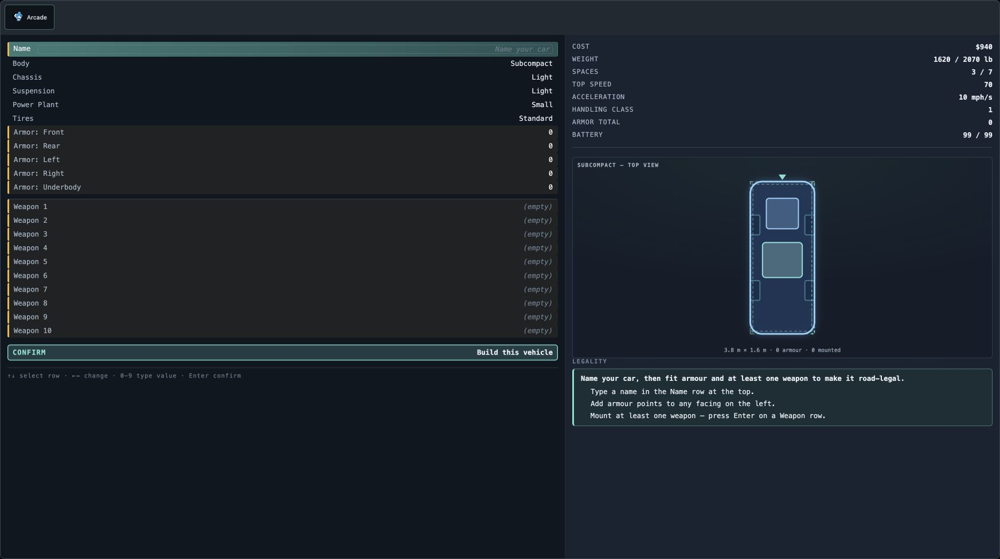

smduel live review evidence
Live captures from September 29, 2026, using seed a11ce5ee. Open an original image to inspect it at the saved resolution. Select evidence, save favorites, or compare two states.
Gallery browser rendering remains unverified because local HTTP serving and file URL navigation were blocked. JavaScript syntax and screenshot references were checked. Charts require an internet connection to load ECharts.
Measured readability defects
Measurements came from the live rendered DOM, including shadow roots. Hover or tap the chart for exact values. Selecting a text-size bar opens its screen below.
Measurement method and capture limit
Font sizes are computed CSS pixels. Contrast uses WCAG sRGB relative luminance. Saved screenshots are 1744 × 976 pixels. The browser viewport used DPR 2, and the canvas backing buffer was 3488 × 1952. Native-DPR screenshot capture was denied by the browser permission check.
Constructor rows 12.19px; Facing and Ammo 11.25px; keyboard hint 10.31px; schematic caption 9.38px; Driver form 14.06px; Title tagline 16px. The Create Driver button has 1.34:1 text contrast. Dark #101820 text on its mint background would give approximately 10.01:1.
Constructor


Screens and interaction evidence
Compare two captures
Choose a before and after state. Each preview links to its original image.